Physical Pinball Playfield Component Analysis
Click any image to enlarge full size. Dedicated physical photo representation of real board objects.
📋 Strict Physical Pinball Component Taxonomy (Click Images to Enlarge)
Comprehensive documentation of real physical pinball board components, solenoids, and mechanical hardware:
| Photo (Click to Enlarge) | Physical Component | Mechanical Target Type | Plain-English Physical Operation |
|---|---|---|---|
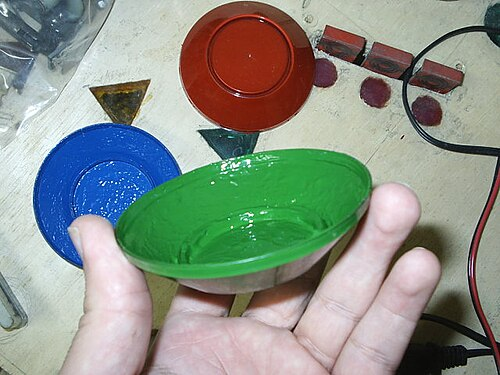 |
Pop Bumpers (Jet Bumpers) | Active Solenoid Ring | Cylindrical bumpers with a floating ring. When touched, an under-board solenoid fires downward, violently repelling the steel ball. |
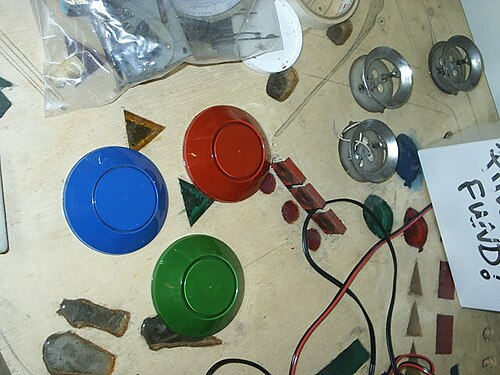 |
Drop Target Banks | Falling Plastic Plates | Vertical plastic plates over solenoid slots. Hits knock plates flat below the wooden board. Solenoids reset targets upward. |
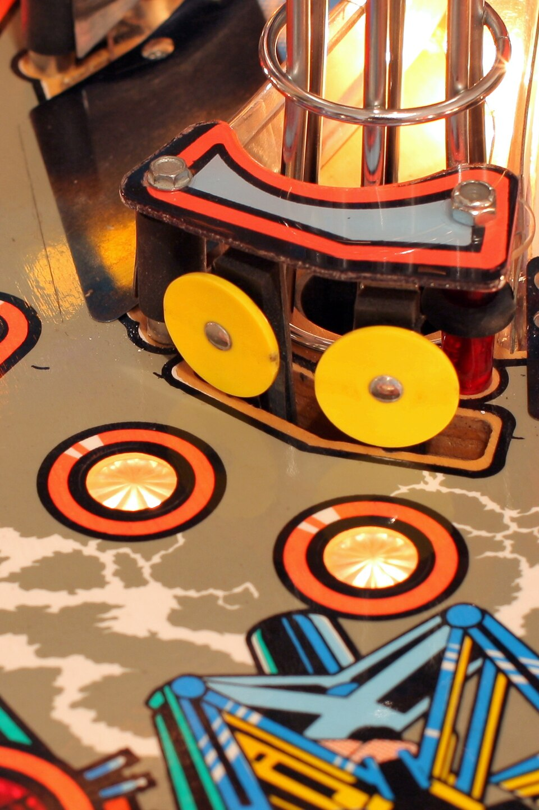 |
Standup Target Banks | Stationary Leaf Switches | Rigid plastic or metal plates mounted to playfield wood. They stay upright on contact and bounce the ball backwards. |
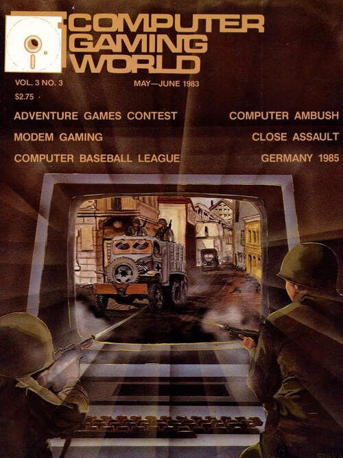 |
Spinners (Spinning Targets) | Hinged Axle Plate | Metal plates hinged above a lane. Passing balls push under the plate, spinning it rapidly to trigger repeated switch contacts. |
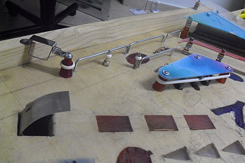 |
Scoops / Sinkholes | Playfield Surface Cutouts | Holes cut into playfield wood. Balls roll in, fall into under-board troughs to pause play, and eject via solenoid kickers. |
 |
Physical Ball Locks | Under-Board Troughs | Subterranean channels or mechanical traps holding 1 to 3 steel balls. Releasing all balls simultaneously starts Multi-Ball. |
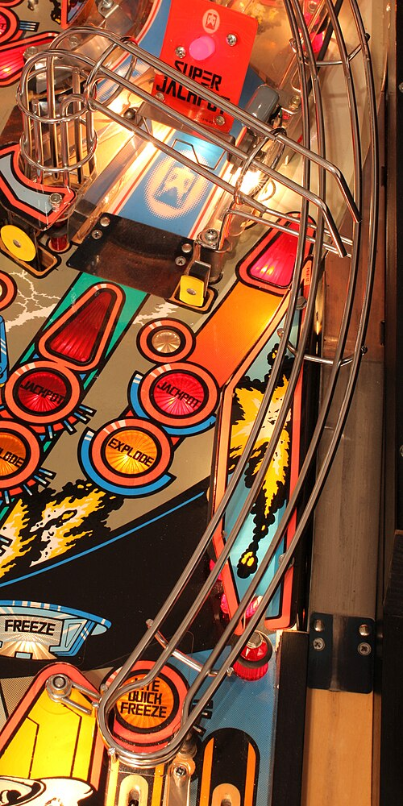 |
Ramps & Habitrails | Elevated Wire Tracks | Molded inclines and stainless steel wireform tracks. They carry balls over obstacles and deliver gravity returns to flipper lanes. |
 |
Orbits & Loops | Outer Perimeter Lanes | Smooth curved outer channels along playfield edges. Fast shots travel around the top loop and return down the opposite lane. |
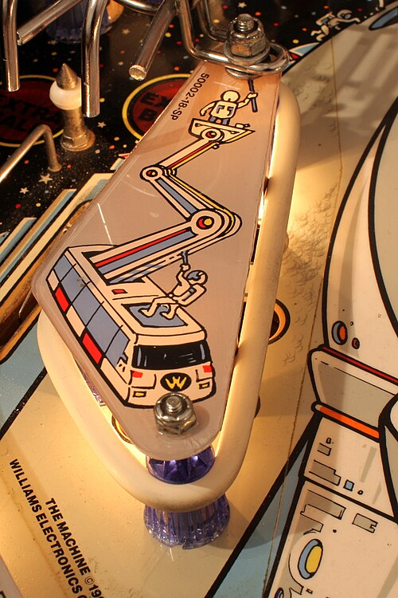 |
Slingshots | Active Kicker Rubbers | Triangular rubber bands above flippers. Solenoid kicker arms behind the rubber bands launch the ball sideways across the board. |
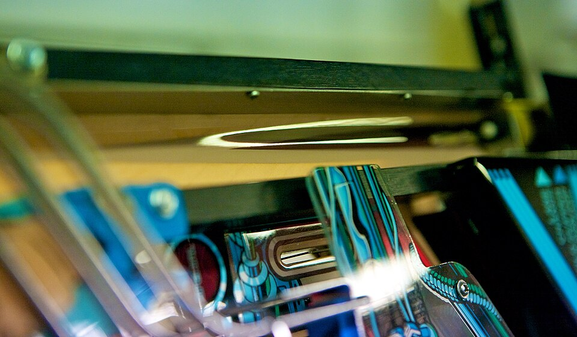 |
Rollover Lanes | Floor Wire Switches | Narrow channels with wire switch arms protruding through playfield wood. Balls roll over switch arms to register lane lighting. |
 |
Captive Balls / Newton Balls | Trapped Steel Ball Track | A steel ball trapped inside a short channel in front of a target switch. Ball impacts transfer energy through the trapped ball. |
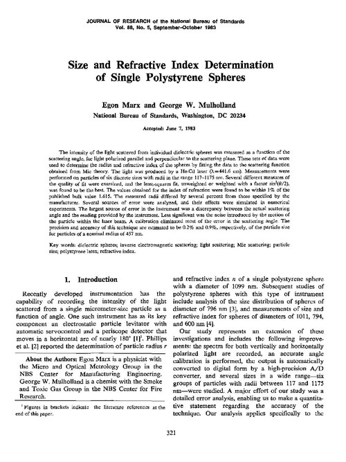 |
Under-Board Magnets | Electromagnet Coils | Coils under playfield wood. When energized, magnets capture, spin, hold, or throw steel balls in wild trajectories. |
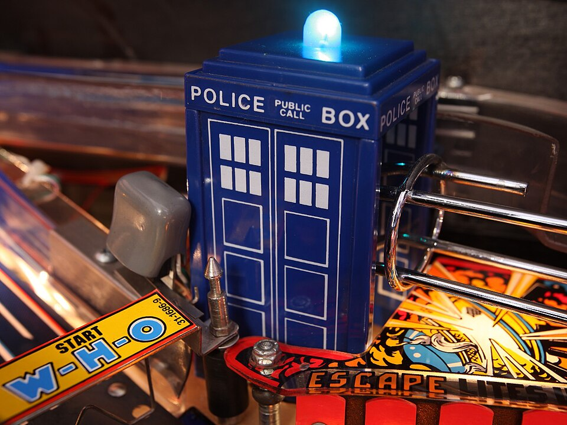 |
Mechanical Diverters | Solenoid Gate Flappers | Solenoid gates inside ramps or orbits that swing open or closed to redirect balls into different playfield channels. |
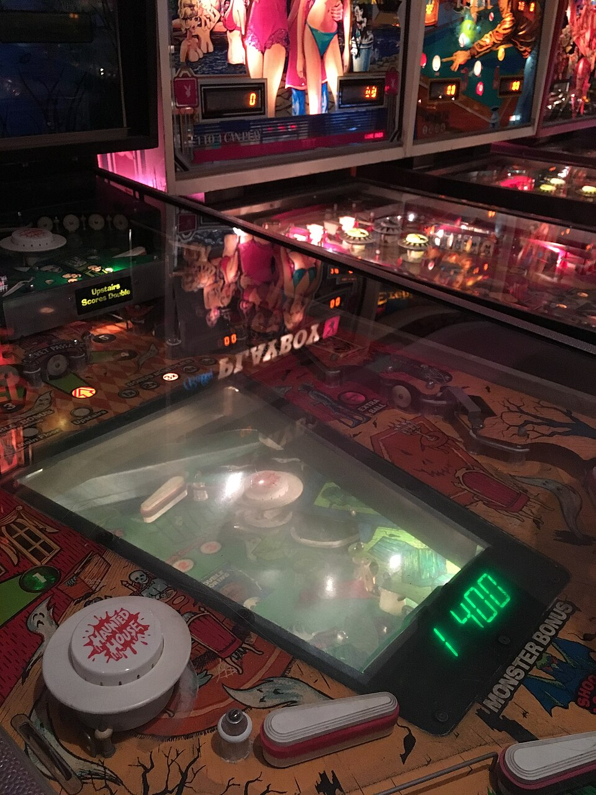 |
Vertical Up Kickers (VUKs) | Under-Board Plunger Pots | Subterranean solenoid cups. When balls enter the pot under the table, vertical solenoids shoot balls up through board holes to upper rails. |
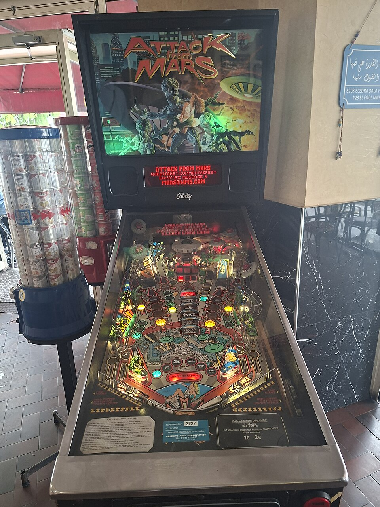 |
Physical Bash Toys | Motorized Sculptures | Heavy interactive targets (Flying Saucer, Castle Gate). Direct ball hits trigger mechanical shaking, doors opening, or toy damage. |
| Outlane Kickbacks | Solenoid Plunger Pins | Solenoid pins hidden inside bottom outlanes. Active kickbacks launch balls entering outlanes back onto the main playfield. |
🎰 Iconic Pinball Machines (Real Physical Board Photos)
Twilight Zone
Designer: Pat Lawlor
Features a working physical Gumball Machine that stores real balls, magnetic mini-playfields, and a high-speed ceramic ball.
The Addams Family
Designer: Pat Lawlor
Features "Thing's Hand" that reaches out of a box to physically steal and lock balls under the board.
Attack from Mars
Designer: Brian Eddy
The gold standard of "Flow Layouts". Players shoot a central flying saucer target to make it wobble and explode.
💬 Player Community Quotes & Sentiment
Attack from Mars — Flying Saucer Bash Toy
"Bashing the flying saucer in the center until it wobbles and explodes never gets old. It gives immediate physical feedback."
— Pinside Collector ReviewMedieval Madness — Castle Gate Destruction
"Lowering the drawbridge and smashing open the castle gate provides the most satisfying physical reward in arcade gaming."
— Pinside #1 Rated Review📚 Research Sources, Discourse & Video Reviews
🌐 Community Discourse & Ratings
-
Pinside Top 100 Pinball Machines ↗
Community ranking database for machine layouts, playfield ratings, and mechanical reviews.
-
Reddit (r/pinball) Community ↗
Player discussions on flow vs stop-and-go layouts, shot geometry, and component chaos.
🎥 Video Reviews & Gameplay Guides
-
Bowen Kerins & PAPA Pinball Tutorials ↗
Masterclass video breakdowns of playfield geometry, ramp feeds, and ball control tactics.
-
Todd Tuckey & Coastline Pinball Teardowns ↗
Mechanical inspections of solenoids, pop bumpers, habitrails, and physical bash toys.